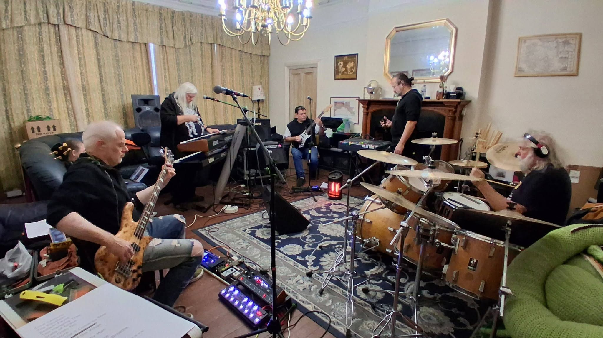
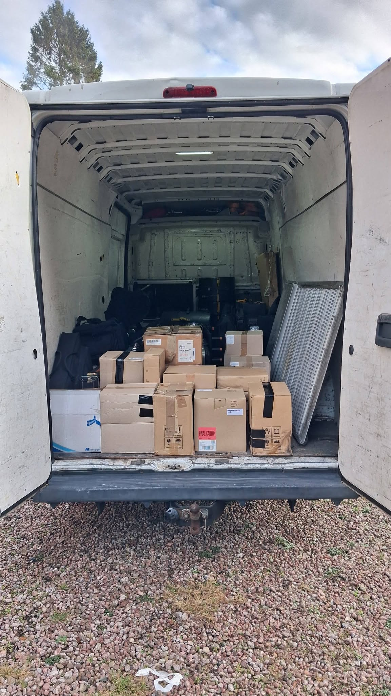
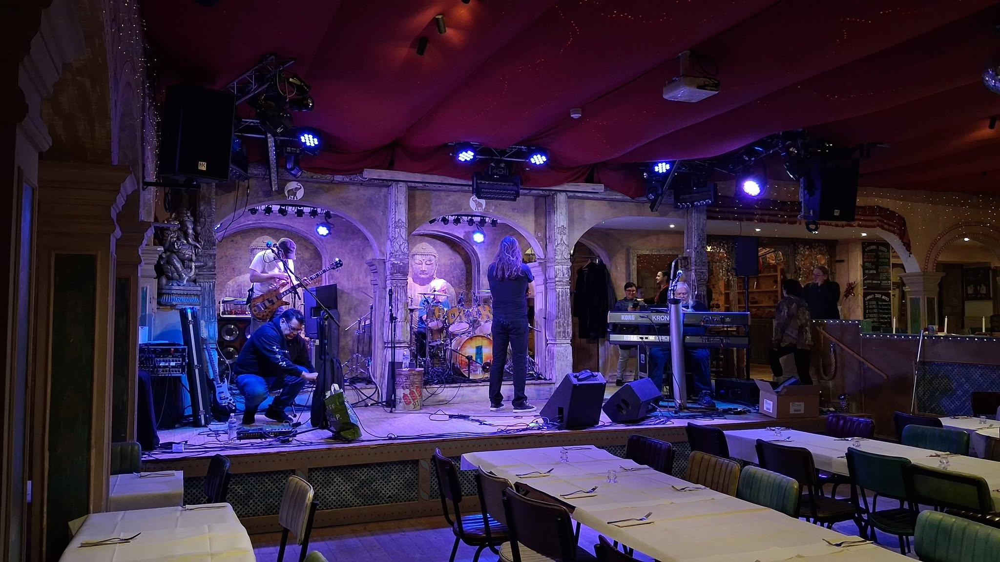
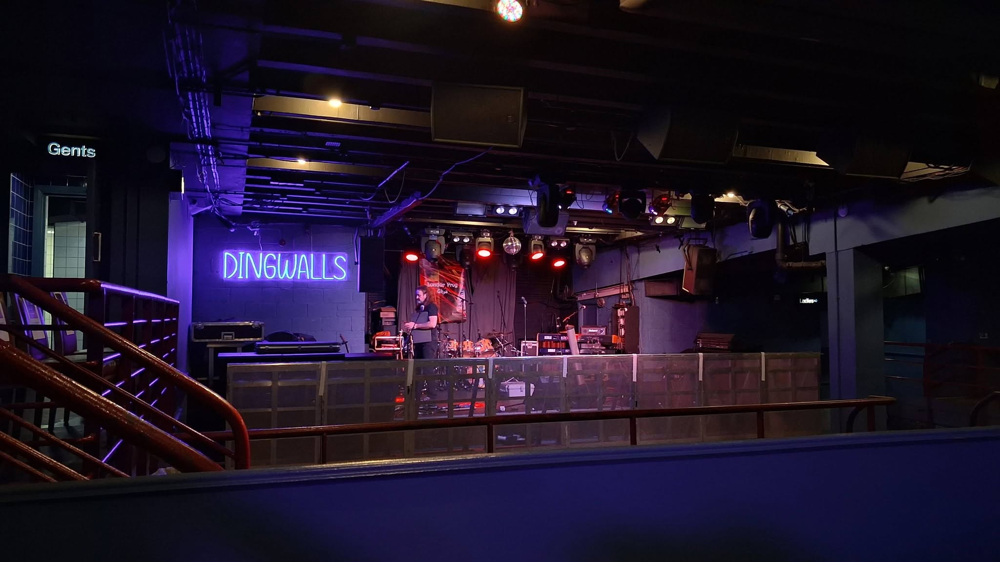
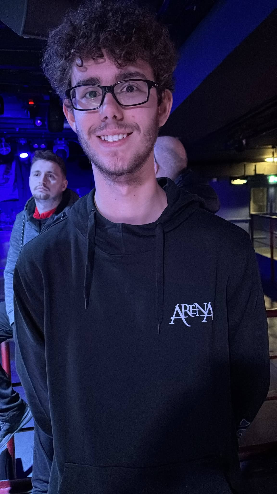

Arena UK
Day 1
Trading Boundaries, Sheffield Green
I travelled down to Clive's house on Friday so I could be there for packing the van. I arrived at about 3pm and sat in for the remainder of the rehearsal. We then packed all the gear away into the corresponding boxes, ready to pack the van in the morning. We then went out for a Chinese dinner at Planet Buffet. Back to Clive's and we spent a while trying to figure out the card machine and then off to bed.
I woke up at about 8am to load the van for 8:30. Once loaded we set off for Trading Boundaries. We arrived at about 2:30pm and starting setting up the gear. I was in charge of Clive's keyboards (surprise surprise!) and once they were done I could focus my time on setting up the lights. Rob, the house engineer, took me through his desk and sat with me while we moved presets around so I could easily use it. We then spent some time trying to program a random strobe as I wanted that effect to be in the show at certain points.
Then it was time for soundcheck where I practiced along with the band as I had to busk the lighting. Once soundcheck had finished, we headed upstairs for a lovely dinner and I was gifted a hoodie from the band! I also made the most of my dad's hotel room shower so I could be clean. Now it was time for the show which I was very excited for. I think it went well and I really enjoyed doing the lighting for it despite me making a few mistakes here and there.
After the show it was time to pack away and have a drink. We were staying at the Premier Inn in East Grinstead and headed there at about 1am. I was sharing a room with Dave and we sat up chatting for a bit before heading to bed.



Day 2
Dingwalls, London
Today we woke up in the hotel at about 10:45am as we were meeting the rest of the band at 11am for brunch. John drove me, Dave and Sarah to East Grinstead to meet with the others. Brunch was lovely and I had the big breakfast, along with quite a few others. Surprisingly, I managed to finish most of it. Then it was the long drive to Dingwalls. Our load in was at 3:30pm
We arrived at about 3:45pm so it was a very quick load in on quite a tight stage so the layout had to be altered a little bit with John being infront of Clive.
Once I had done the keyboards, I turned my focus to the lighting desk which I soon discovered had nothing programmed onto it except some colours and faders that turned lights on. This was not enough for me to do a good light show so I spent the next hour or so until doors programming different positions and effects. I hadn't even realised the soundcheck had happened and then doors were opening soon. Clive took this opportunity so tell the Pendragon chat that I have been converted to Arena with my new hoodie.
Damian kicked off proceedings with his solo set which he finished with Let Me Down Slowly, my mums favourite song which I had been talking to him about a few days before, I managed to get a brief video for her as she missed the gig due to being unwell. Then after an interval it was time for Arena. I was slightly worried about the lack of practice time I had and whether or not my programming would work as I am not hugely familiar with Avolites. I think it went well and I got a lot of compliments after the show, most notably from Chris Parkins who said I have come a long way since John's concert here last December, which was my first time lighting a gig!
Then it was time to pack away. I was quote rushed as it was rail replacement back to uni and I didnt know when the trains finished to go home. Dad figured it out while he went home so I knew I had until about 11pm when I had to leave. As I loaded the last box of merch I said my goodbyes and arrived home about 12:30am.

